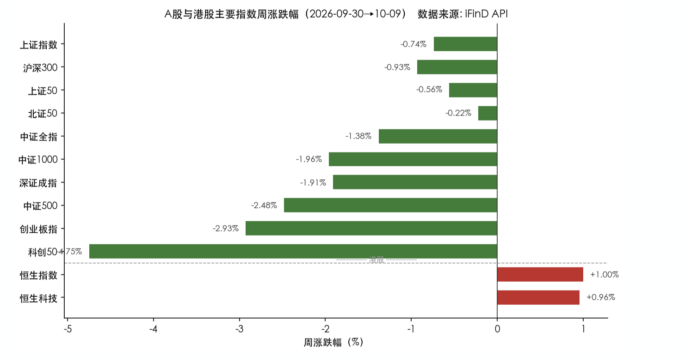
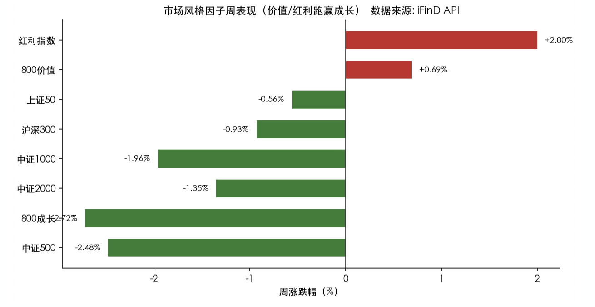
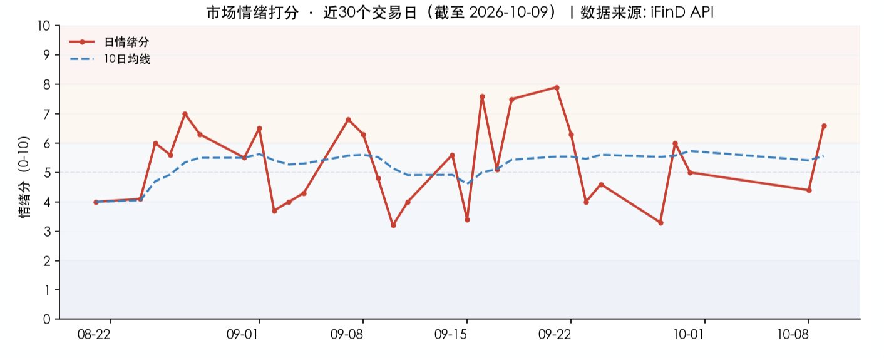

投资备忘20261011-跌了？开会！
2026-10-08 — 2026-10-11 · W41 · 周度备忘
本周只有两个交易日，但还是在很高的强度完成了一个"技术动作"：指数下探到前低附近（3754 vs 3741），并在"队伍"的带领下随后完成反弹，使得上证的下跌回到 1% 以内。
话题：跌了？开会！
市场当前仍然沿着 2021 年的路径在运动，可能形成 2750-4000 点的震荡格局，但是因为有"队伍"的参与，是否会重演 7、8 月份的市场结构需要观察。
随后证监会在 10 月 10 日开会，好像成了下跌后的标准动作：开个会大家都舒服了——有人宣布"会已经开了，你还想让我怎样"，有人兴奋"参会很受鼓舞，回去一定努力工作"，有人嘀咕"他们开了，我们还要不要开"。反正事情就是这个事情，好像开会就能让市场企稳了。不过你还别说、真别说，924 不就是么。
本周市场：高切低
节后 A 股仅两个交易日，市场完成了一次"高切低"的快速轮动：节前强势的科技成长（电子、通信、机械）遭集中兑现补跌，资金切向红利防御（煤炭、石油、公用）+ 低位消费（纺织服饰、传媒、商贸零售）。港股本周独立走强（恒指 +1.00%），反映外资对中国资产的配置意愿未减。
本周风格极致分化——价值/红利全面跑赢成长。红利指数（+2.00%）与 800 价值（+0.69%）为正，而 800 成长（-2.72%）大幅跑输，成长-价值剪刀差 3.4%，是典型的"高切低、弃成长保红利"的防御市。大小盘上，中证 2000（-1.35%）与中证 1000（-1.96%）同步走弱，仅大盘红利（上证红利）逆势上涨。

- "高切低"轮动是本周唯一主线：节前涨幅巨大的科技成长（CPO -5.93%、半导体 -5.64%）遭遇集中兑现，资金快速切向黄金（+3.43%）、红利（+1.08%）、中药（+1.78%）等低估值防御方向。这是典型的"节前赚 beta、节后防回撤"的资金行为。
- 红利/资源资产重新定价：在 10 年美债收益率仍处 5.2% 高位、国内无风险利率下行的背景下，煤炭（+2.74%）、石油石化（+2.25%）、公用事业（+1.70%）的股息率相对吸引力凸显，红利资产成为资金"避风港"。
- AI 产业链高位分歧加剧：尽管星球本周仍在密集讨论光互连（美银预测 AI 网络 350 亿→3940 亿美元）、云资本开支等远期叙事，但 A 股 CPO/算力硬件本周资金大幅流出（中际旭创主力净流出 20.5 亿、东山精密 28.4 亿），反映"产业逻辑未变、交易拥挤度已高"的矛盾——远期叙事兑现前，估值消化压力显现。
- 消费低位修复：纺织服饰（+2.10%）、传媒（+2.70%）、商贸零售（+1.23%）等低位消费板块逆势上涨，属于超跌反弹 + 政策预期（中欧成果共识清单）驱动，持续性待观察。

市场展望
宏观上，市场对美债的讨论增加（周中打算加更一期），基本结论是：利率高是挺高、钱出不去、不一定能挣到钱。我觉得如果你的钱够长，美债可能是未来几年的保命资产。AI 拯救了 G2 的经济和产业转型，美债是最受伤的资产——如果未来 2 年看到 AI 带动的增长停滞，谁来支付利息？
市场情绪：情绪分回升至 6.6（偏暖/乐观），主要受赚钱效应（7.8）与持续性（8.5）拉动；但风险偏好维度仅 1.8，显示"个股活跃、指数疲弱、高位股杀跌"的结构分化——普涨与补跌并存。

模式识别——中期：5、6 月份以来市场从高点回撤 10%，底部震荡 2 个多月，当前市场仍然更像 2021 年春节后抱团股瓦解的震荡 + 市场出现新热点的场景。如果没有新热点，则更可能像 2021 年 1-3 月震荡后的破位：前者后续是震荡，后者是破位。
模式识别——短期：很快用 2 个交易日测试了 7 月的低点并在"队伍"的带领下尝试修复，让人担忧的是否会出现 7、8 月份的市场结构——队伍类资产上涨，而其他资产自生自灭甚至"多杀多"，很可能继续阴跌或者救市失败。
组合备忘
Beta 组合微涨，表现明显跑赢市场（市场是指中证全 A -1.4%），Macro 持平。本周市场下跌组合跑赢，主要是持仓的 HALO 和红利资产上涨，机器人和科技有所回落但持仓占比不高。组合仓位下降：Beta 策略仓位 77%，降低 HALO 和地产，增加弹性资产；Macro 策略仓位 70%（其中转债 30%）。组合的超额主要是超配资源和红利，港股表现同样支撑组合，机器人继续承压。
| 类别 | 仓位 |
|---|---|
| Beta 策略（降 HALO 和地产、增弹性资产） | 77% |
| Macro 策略权益仓位（含转债 30%） | 70% |
Beta 跑赢市场 · Macro 持平 · 周度涨幅不再公开播报
本周操作：开盘很快完成下调仓位的操作，并在市场到前低附近增加弹性资产。方向上是资源红利降、机器人增加。当前的买入是"交易"性的，后续反弹卖出，仓位控制的思路保持不变。
下一步：继续保持谨慎，无论是仓位还是结构。内需的疲弱需要更多的政策、更长的时间和市场更大的压力；海外的流动性压力是当下的压力，同时国内的杠杆资金（融资下降）和新发基金下降；市场可能出现 7、8 月份走势。短期阶段底部，按照反弹做，仓位保持相对灵活，但严格控制上限。结构上：HALO 资产和低位资产保持稳定，科技和机器人等弹性资产做反弹。
研究：红利资产选股、电池、AI 未来的端侧应用、HALO 资产的梳理和聚焦、元器件相关。
上期钩子的答案：① 3770-4000 区间与 7 月低点的测试结果——部分验证：节后 2 个交易日即下探前低附近（3754 vs 3741）并在"队伍"带领下反弹修复，上证跌幅收回 1% 以内，但 7、8 月结构是否重演待观察；② 美债 5.3%+ 与财政再融资风险的持续性——讨论增加（周中打算加更一期）：利率高、钱出不去、不一定能挣到钱，钱够长则美债可能是保命资产；③ 地产"挤牙膏"政策的实际效果——本期未及观察，留钩；④ AI 投资回报支撑利率上行、"明年显著衰退"的判断——延续验证：若未来 2 年 AI 带动的增长停滞，谁来支付利息？新钩子：① 是否重演 7、8 月份市场结构——队伍类资产上涨、其他资产自生自灭甚至"多杀多"、阴跌或救市失败；② 美债加更一期的落地与"AI 停滞谁来付息"的验证；③ 反弹卖出纪律的执行——本轮交易性买入后续反弹卖出；④ 消费低位修复（纺织服饰/传媒/商贸零售）的持续性。对账窗口：2026 年 10 月下旬。